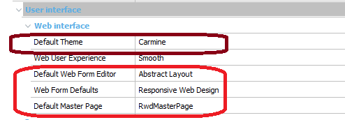
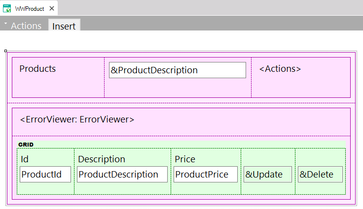
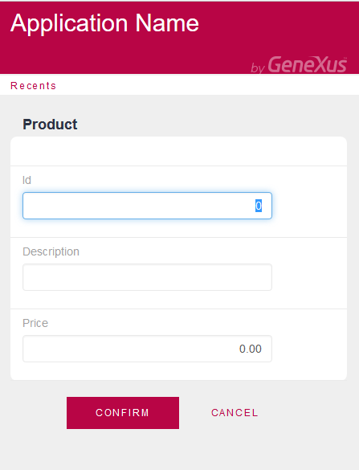
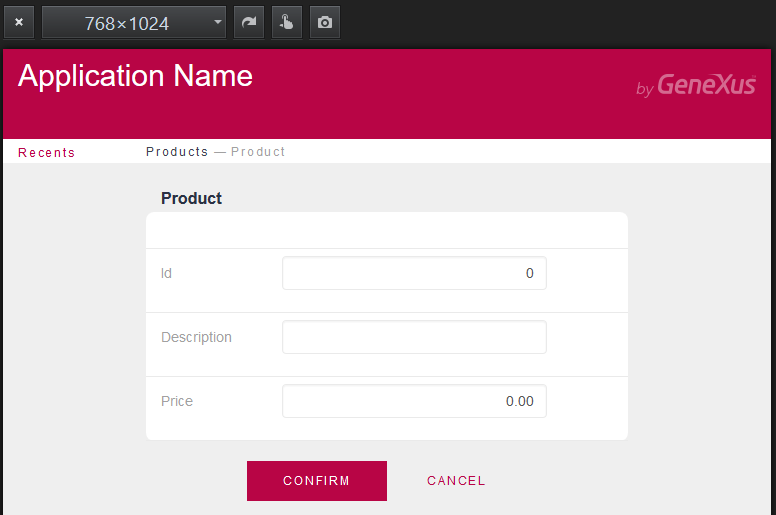
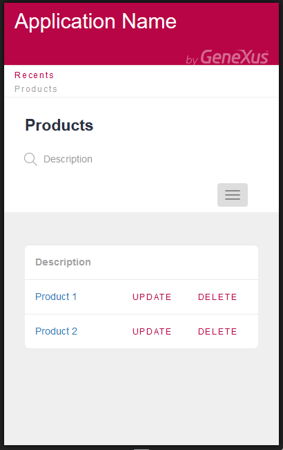
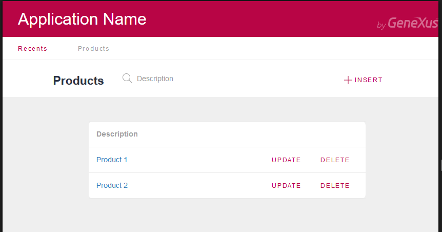

This is a getting started guide for developing a Responsive Web Application with GeneXus. In this example, the application is based mainly on Web Transactions and Work With Pattern forms.
All that’s needed is to:
Note: Those are the default values for new KBs.

Note: Make sure that HTML Document Type property is set to HTML 5.
- Create a Transaction, and apply the Work With Pattern to it : Apply Pattern -> Work With for Web.
As a result of these configuration settings, web transaction default forms, Work With Pattern instances, and prompts, will use the Abstract layout.
The form of a web panel generated by the Work With Pattern will look as follows:

Design form of a web panel generated by Work With Pattern.
- Rebuild the application.
- Then, run the application!
At runtime, it looks as shown below. Note that label controls automatically change their position in order to adapt to the size of the screen.

Web transaction form running on a phone

Web transaction form running on a tablet
Note that in the images below, the information shown for phone screens was reduced (the product’s price is not shown), and the insert button appears only when the menu is displayed, while in the tablet screen, the layout is distributed in a totally different way.

Work With form running on a phone

Work With form running on a tablet
Follow reading: Getting started with RWD: Understanding default forms
|